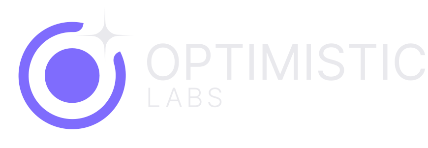

On violet-deep (nav)Mark only
 Mark, on dark
Mark, on darkO mark

Nocturne (thank-you page) Star / ripple motif
Star / ripple motifFaith Lab co-brand

Faith Lab, on darkSports Lab co-brand (concept)

On violet-deep (nav)Mark, on dark
Nocturne (thank-you page)Star / ripple motif
Faith Lab, on dark